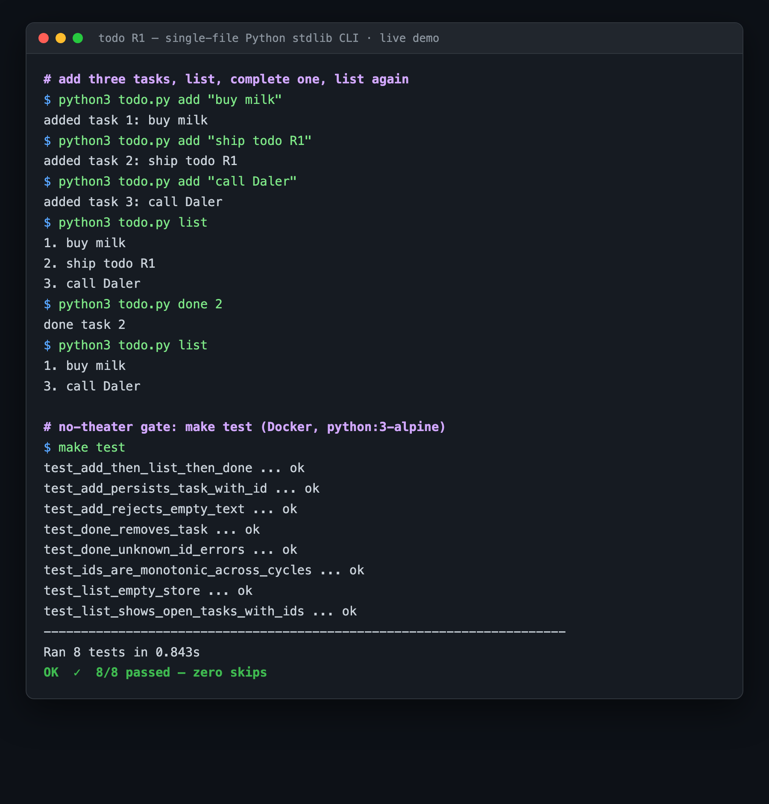

A from-scratch, dependency-free todo CLI (single file, Python stdlib only) — the v2 baseline for rung R1.
add <text> — append a task to a JSON store (auto-incrementing id)list — show open tasks with their numeric idsdone <id> — complete/remove a task118-line todo.py (argparse + atomic JSON persistence + error handling), a Dockerfile (python:3-alpine), and a Makefile running the suite in Docker.
make test 8/8 ✓ 0 skipped tests PR #92 open Docker-built at Review
A real run on the delivered code (branch r1/todo-cli, PR #92): three tasks added, listed, one completed, listed again — then the no-theater gate (make test in Docker).

add/list/done behaving correctly, and all 8 unit tests passing in Docker (zero skips).| Pull request | coffeebreakerboy-sys/todo #92 (5 commits, +336) — OPEN, mergeable |
|---|---|
| Source branch | r1/todo-cli (the PR #92 branch) |
| Tests | 8/8 passing in Docker (python:3-alpine, python3 -m unittest) — add/list/done, empty store, error cases, monotonic ids, end-to-end subprocess. Zero skip/xfail/disable markers. |
| AI review | Free GitHub-Models reviewer ran (success); its one finding was addressed by the worker (no won't-fix dodge). Deliverable code drew no findings. |
| Reproduce it | gh repo clone coffeebreakerboy-sys/todo && cd todo && git checkout r1/todo-cli && make test |